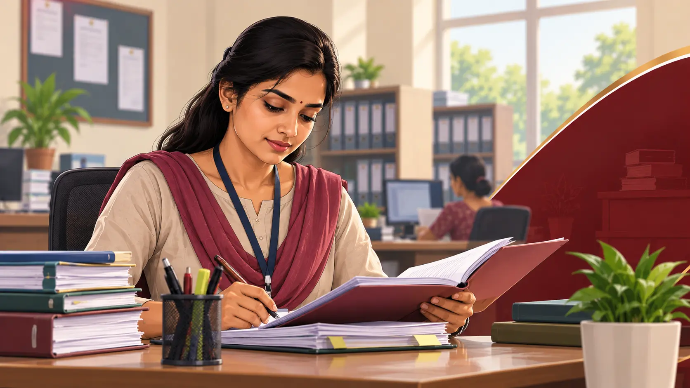
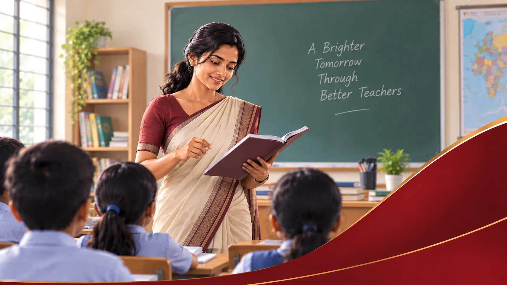
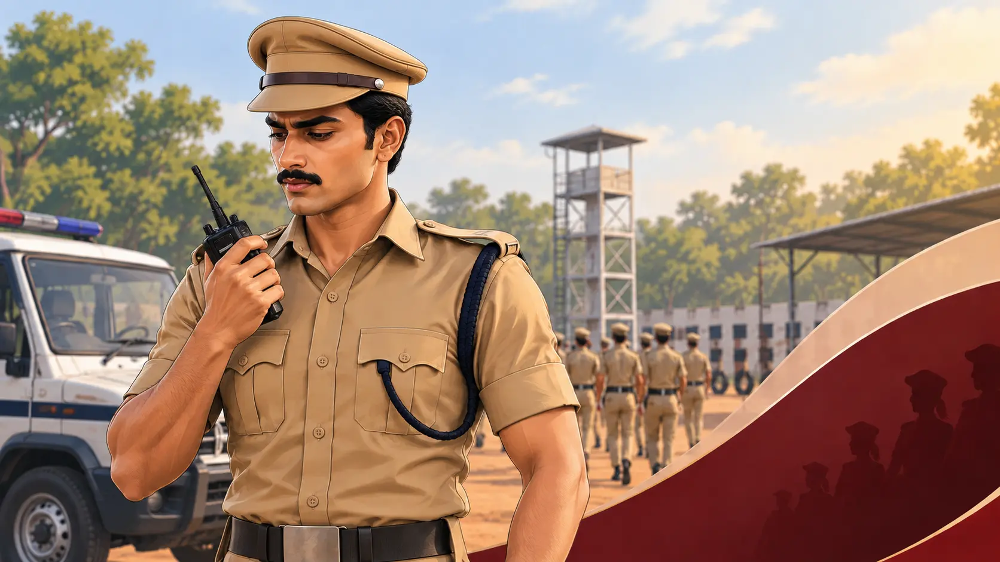
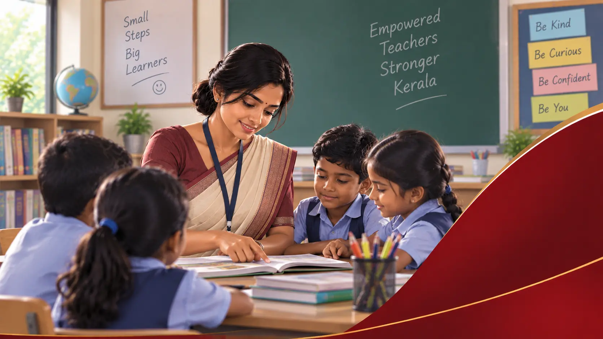
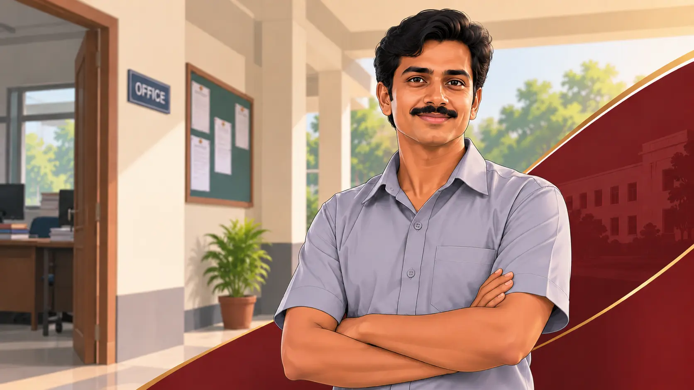
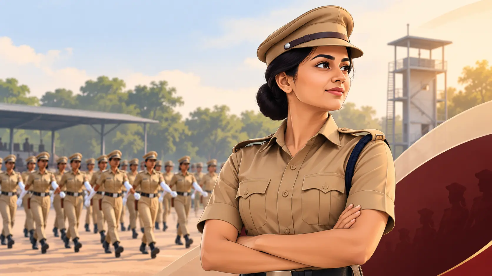
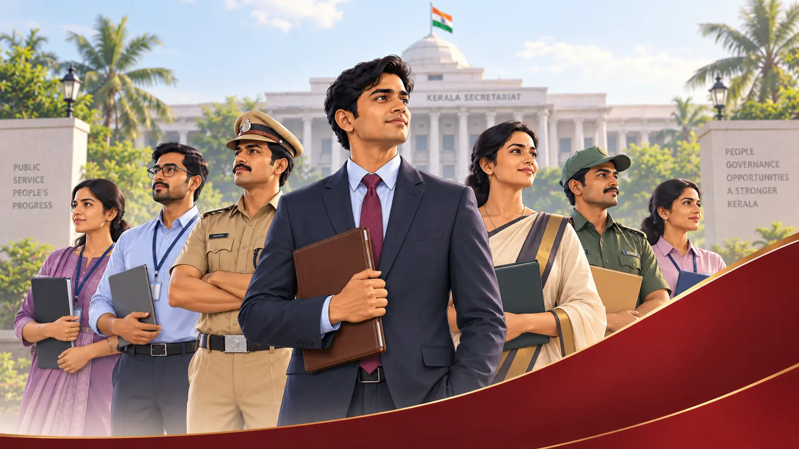
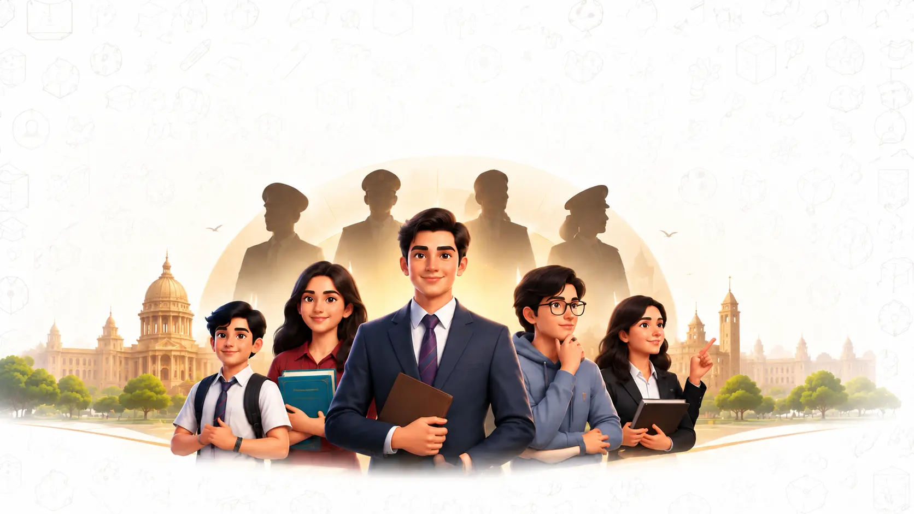
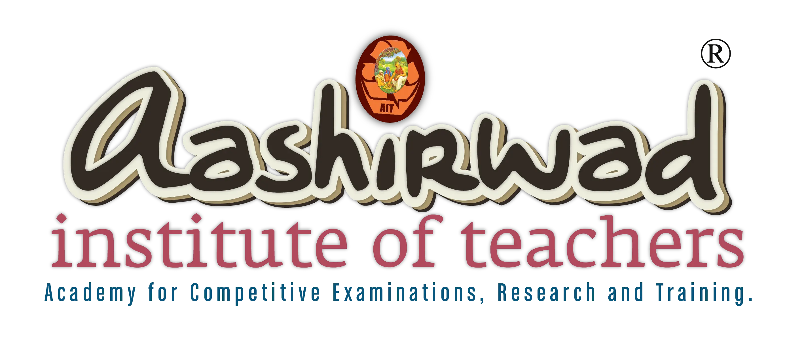

An institute is founded
Aashirwad Institute of Teachers begins its work in Vaikom, Kottayam — a leading educational institution built on quality education, structured training and expert guidance.
Academy for Competitive Examinations, Research & Training
Building Futures Together
Established in 2009, dedicated to empowering learners through quality education, structured training, expert guidance and innovative learning solutions.
to identify potential, nurture talent and create pathways to academic and professional success.
Aashirwad Institute of Teachers begins its work in Vaikom, Kottayam — a leading educational institution built on quality education, structured training and expert guidance.
Aashirwad evolves into a comprehensive educational ecosystem spanning competitive examinations, teacher eligibility training, school education, civil service preparation, digital learning and skill development.
Every programme we run traces back to the same purpose — identify potential, nurture talent, and create pathways to academic and professional success.
Aashirwad has built a strong reputation for result-oriented preparation for a wide range of competitive examinations, including Kerala PSC, KTET, CTET, Navodaya Entrance, Civil Services, SSC and other national and state-level examinations.
in Kerala PSC examinations.
We have also maintained a strong and consistent record in Jawahar Navodaya Vidyalaya admissions from Kottayam since 2010, demonstrating our long-standing expertise in entrance examination preparation.
Our academic approach combines conceptual clarity, systematic preparation, regular assessment, quality learning resources, personalised mentoring and continuous academic support.


Aashirwad provides learning opportunities for students and aspirants at different stages of their academic and professional journey. Through this diverse range of programmes, we strive to provide learners with the right knowledge, guidance, resources and opportunities within a single educational ecosystem.









The Civil Service Nurture Programme (CSNP) is one of Aashirwad’s flagship initiatives, designed to nurture young aspirants from the school level and guide them progressively towards the Civil Services.
Innovation has been an integral part of Aashirwad’s educational journey. Through initiatives such as Aashirwad Rank File and Aashirwad EduVerse, we integrate technology with conventional learning.
Our digital learning ecosystem brings together rank files, study materials, current affairs, multimedia resources and interactive learning tools, enabling learners to continue their preparation beyond the traditional classroom.

At Aashirwad, education goes beyond completing a syllabus or preparing for an examination. We believe in developing critical thinking, confidence, communication, discipline, problem-solving skills and a lifelong commitment to learning.
Our programmes are supported by experienced educators, structured curricula, regular assessments, personalised mentoring and continuous learner support.


We believe that meaningful education should lead to measurable progress and lasting success. Our commitment to learner success is reflected not only in our examination results and ranks but also in the confidence we place in the quality of our training.

Systematic preparation built on years of examination expertise.

Eligible candidates who do not qualify after completing the prescribed training may attend the next training session free of charge, subject to the applicable programme terms and conditions.

A promise backed by our own trust in the quality of what we teach.

To build a trusted, progressive and future-ready educational ecosystem that makes quality education, expert guidance and effective learning resources accessible to every learner.

To empower learners, nurture potential and build successful futures through quality education, innovative learning, personalised guidance and an unwavering commitment to excellence.